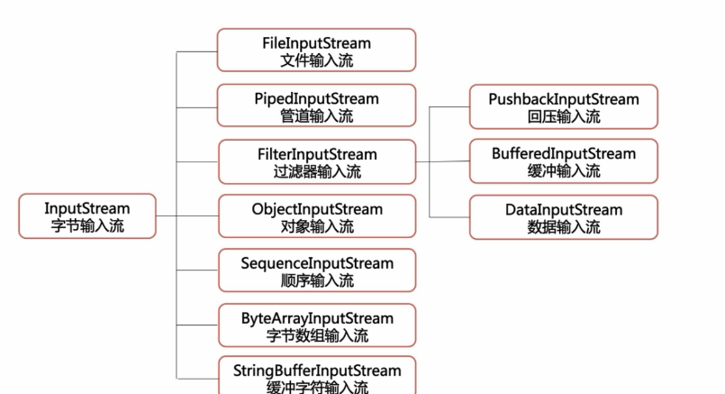
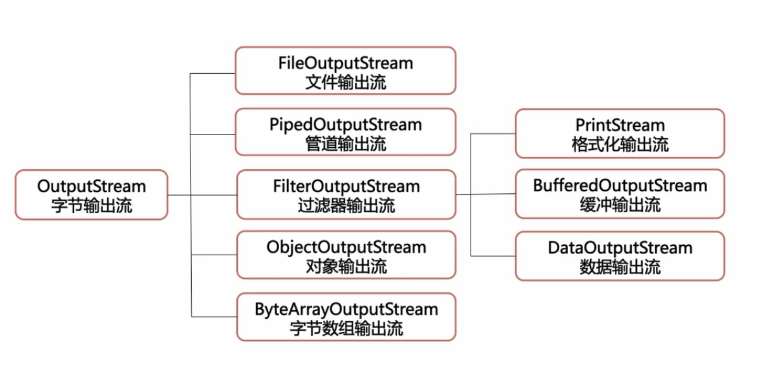

流¶
文件字节流¶
从文件系统中的某个文件中获取输入字节流 ，用于读取图片数据之类的原始字节流
 FileInputStream
- int read() 从输入流中读取一个数据字节
- int read(byte[] b) 从输入流中最多读取b.length个字节数据到byte数组中
- int read(byte[] b,int off,int len)
- void close()
read -1 到达文件末尾
file.txt
hello，fuwenchao
new line
code:
public class FileStreamTest1 {
public static void main(String[] args) throws IOException {
FileInputStream fileInputStream = new FileInputStream("D:\\file.txt");
int n = fileInputStream.read();
System.out.println(n);
System.out.println((char)n);
}
}
output:
104
h
code2:
public class FileStreamTest1 {
public static void main(String[] args) throws IOException {
FileInputStream fileInputStream = new FileInputStream("D:\\file.txt");
int n = fileInputStream.read();
while(n != -1){
System.out.println((char)n);
n = fileInputStream.read();
}
fileInputStream.close();
}
}
字节字符转换流¶
InputStreamReader
OutputStreamWriter
FileInputStream fis = new FileInputStream("D:\\file.txt");
InputStreamReader isr = new InputStreamReader(fis);
int n = 0;
char[] cbuf = new char[10];
while((n=isr.read()) != -1){ // read a single character
System.out.println((char)n);
}
while((n = isr.read(cbuf)) != -1){ // read to cbuf
String str = new String(cbuf,0,n);
System.out.println(str);
}
示例¶
/**
* @Author wenchaofu
* @DATE 17:44 2018/5/3
* @DESC
*/
/** desc
* file.rst
* a|b|c
* 1|2|3
* convert to
* a-b-c
* 1-2-3
*/
public class FiledSepTran {
public static final String OLD_SEP = "\\|";
public static final String NEW_SEP = "-";
public static final String filename = "D:\\file.txt";
public static final String newfilename = "D:\\file_new.txt";
public static void main(String[] args) throws IOException {
int n = 0;
String line = null;
StringBuilder sb = new StringBuilder();
BufferedReader br = new BufferedReader(new InputStreamReader(new FileInputStream(filename)));
BufferedWriter bw = new BufferedWriter(new OutputStreamWriter(new FileOutputStream(newfilename)));
while (( line = br.readLine()) != null) {
sb.append(convertLine(line)).append("\r\n");
}
bw.write(sb.toString());
br.close();
bw.close();
}
private static String convertLine(String line){
StringBuilder newLine = new StringBuilder();
String[] fields = line.split(OLD_SEP);
for (String field : fields) {
System.out.println(field);
newLine.append(field).append(NEW_SEP);
}
return newLine.substring(0,newLine.length()-1).toString();
}
}